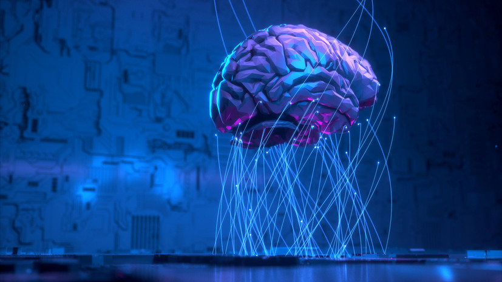

Путин заявил о важности развития нанотехнологий, отметив, что без этого у российской экономики нет будущего.
- Российские учёные из Нижегородского государственного университет им. Н.И. Лобачевского разрабатывают искусственный гиппокамп на основе мемристоров — особых аналоговых устройств, имитирующих работу нейронов. Как рассказал в интервью RT автор работы, заведующий лабораторией мемристорной наноэлектроники Научно-образовательного центра «Физика твердотельных наноструктур» ННГУ Алексей Михайлов, в будущем такие устройства станут основой множества технических решений, помогут ускорить работу искусственного интеллекта и даже, возможно, смогут служить имплантами участков головного мозга. В свою очередь, заведующий кафедрой нейротехнологий Института биологии и биомедицины ННГУ Виктор Казанцев объяснил в интервью RT, в чём заключается фундаментальное отличие работы мозга от компьютеров, а также рассказал об основных направлениях создания биокомпьютеров в России и в мире.
- 
- — Виктор Борисович, недавно учёные из американского университета Джонса Хопкинса предложили создать биологический компьютер, основой которого должны стать органоиды — искусственно выращенные клетки человеческого мозга. Расскажите, пожалуйста, что такое биокомпьютер? Какие основные концепции таких систем сейчас разрабатываются в мире и в России?
- — Начнём с терминологии: само слово «биокомпьютер», которое используют СМИ, не вполне корректно. На самом деле правильный термин для этой области исследований пока не найден. Такие конструкции можно назвать нейротехнологическими устройствами.
- Биологические клетки, включая нейроны, имеют абсолютно иную природу, чем компьютер. Они не работают по принципу бинарной логики, нейроны не оперируют битами, они выдают электрические и химические сигналы — аналоговые, а не цифровые.
- Мы уже настолько привыкли к цифровой среде, что нам кажется, будто цифры всегда были с человеком, но это не так. Человеческий разум создал математику совсем недавно по меркам эволюции.
- Возвращаясь к вопросу, скажу, что исследования с живыми нейронами сейчас ведутся очень активно и в мире, и в России, в частности в ННГУ. Мы работаем как с клетками мозга животных, так и с человеческими нейронами. Клетки высаживаются в пробирку, где для них поддерживается оптимальная питательная среда. Важное отличие нейронов от других клеток заключается в том, что они не делятся — это усложняет нашу работу. Однако они могут расти и устанавливать друг с другом новые связи посредством синапсов (участки нейрона, отвечающие за контакты с другими нервными клетками. — RT). В результате мы получаем в пробирке модель участка мозга, которая может жить несколько месяцев.
- На практике такие клеточные культуры сейчас активно используют при разработке фармпрепаратов. Это очень удобно: можно сразу увидеть, как влияет на работу нейронов то или иное химическое вещество.
- Что же касается использования таких культур для нейротехнологий, то, хотя нейроны не предназначены для вычислений, попробовать научить их этому можно. Мы проводили такие эксперименты, удалось научить нейроны дистанционно управлять роботом посредством интернета. Это было давно, около десяти лет назад, тогда об этом писали в СМИ.
- Но, конечно, говорить о серьёзных вычислительных системах в данном случае сложно, потому что в пробирке нейроны растут хаотично, во всех направлениях. В то время как в мозге нейроны организованы в чёткие структуры.
- Однако сейчас в мире ведутся работы по формированию заданной клеточной архитектуры в пробирке с помощью вытравленной на подложке сети микроканалов — микрофлюидных каналов. И если получится структурировать клеточную культуру, сформировать входной и выходной слои, то это уже напоминает те формальные, математические алгоритмы, которые применяются в компьютерных нейросетях. Только в данном случае работу будут выполнять не логические элементы — единицы и нули, а живые клетки.